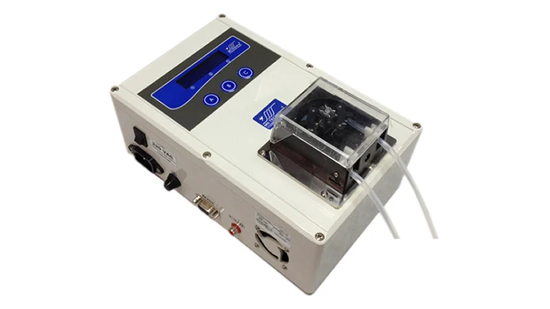

Tubo de silicone 10 x 6 mm TB-203 (metro)
Serve em: Bombas Peristálticas, Bombas Peristálticas Touch Screen
R$52,00
Fabricante nacional de instrumentos científicos

Bomba digital de bancada para bombear e dosar com precisão soluções e meios de cultura.
Preço sob orçamento
Adicione este e outros itens ao pedido. Nossa equipe retorna com preço, prazo e frete.
A bomba peristáltica LDP-101-3 foi criada para bombear e dosar com precisão soluções e meios de cultura. Um microprocessador comanda todas as funções da bomba.
O motor do tipo brushless dá alta precisão e dispensa manutenção. A bomba aceita vários tipos de tubos, o que permite ajustar a vazão conforme a aplicação.
| Vazão mínima | 0,1 ml/min (usar tubo para baixa vazão) |
|---|---|
| Vazão máxima | 150 ml/min (usar tubo padrão ) |
| Rotação | 0,13 a 300 RPM (ajustável com resolução 0,1 RPM) |
| Exatidão/estabilidade | Melhor que 0,5% |
| Função dosadora | Volume: ajustável 1 a 1.000 ml, Exatidão: melhor que 1%, Intervalo: 1 segundo a 100 horas |
| Tipo | Bomba peristáltica digital bancada |
|---|---|
| Aplicação | Bombear; Dosar |
| Número de canais | 01 canal |
| Número de roletes | 3 roletes em poliacetal |
| Tipo de rotor | Rotor em aço inox |
| Tipo de tubos compatíveis | Silicone, Tygon, Viton, Neoprene e Butyl |
| Controle | Digital Microprocessado |
| Menu | Português (BR) |
| Alimentação | 110 ou 220 VAC (pré-definido pelo cliente) |
|---|---|
| Consumo | 30W |
| Ambiente de trabalho | Até 40° C de temperatura / 15 a 80% de umidade |
| Dimensões (HxLxP) | 160 x 250 x 170 mm |
| Peso | 5kg |
| Acompanha | 1,5m de tubos de bombeamento de silicone 5 mm ext. x 3 mm int. (TB-200); Cabo de força; Manual de instruções |
|---|---|
| Opcionais | Entrada de controle externo Serial: RS-232 com script ASCII (Funções liga, desliga, vazão e sentido); Entrada de controle externo Analógica: 4 a 20 mA ou 0 a 10 VDC (Funções vazão e rotação); Entrada de controle externo disparo por pedal ou relé (contato seco); Entrada de controle externo de retorno para CLP na função dosador |
| Garantia | 12 meses (Sendo os 03 primeiros meses contemplados pela garantia legal e os 9 meses subsequentes contemplados pela garantia contratual) |
Compre online, com Pix, cartão ou boleto.
Serve em: Bombas Peristálticas, Bombas Peristálticas Touch Screen
R$52,00
Serve em: Bombas Peristálticas, Bombas Peristálticas Touch Screen
R$38,00
Quem cuida do seu equipamento depois da compra é a equipe que o projetou e fabricou. Você trata da manutenção e da calibração com um único responsável.